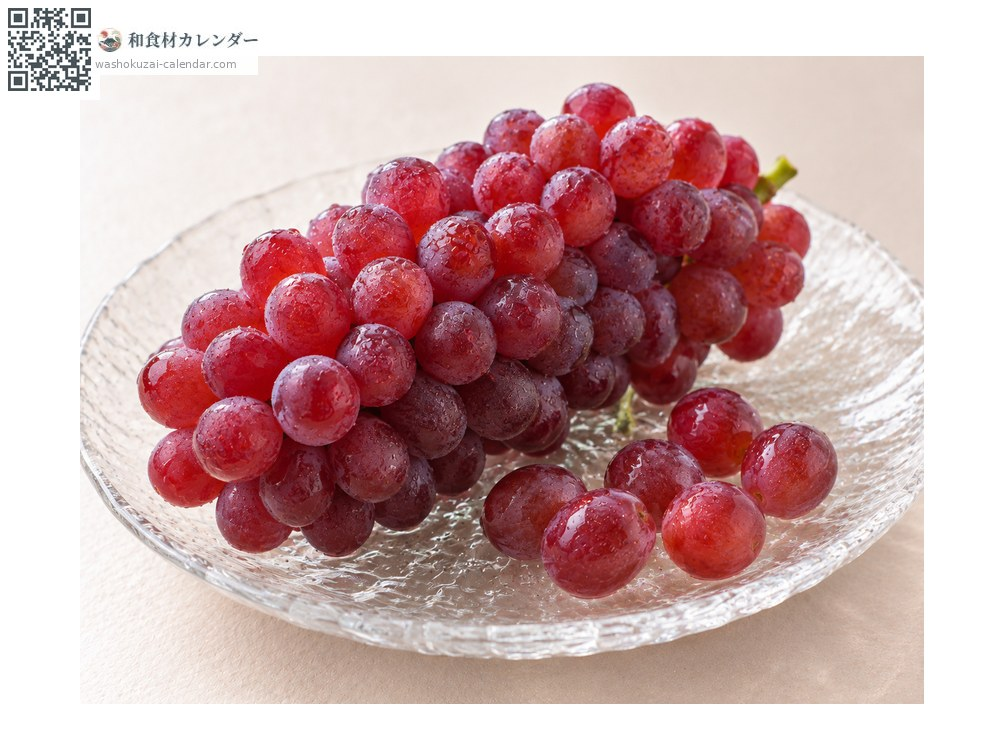
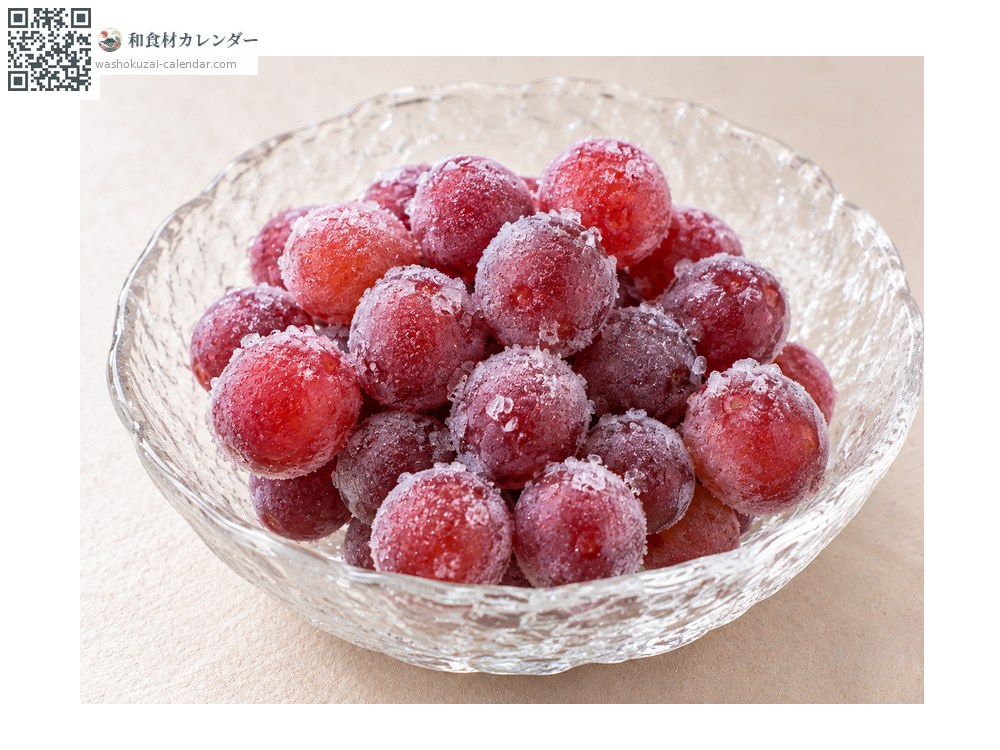
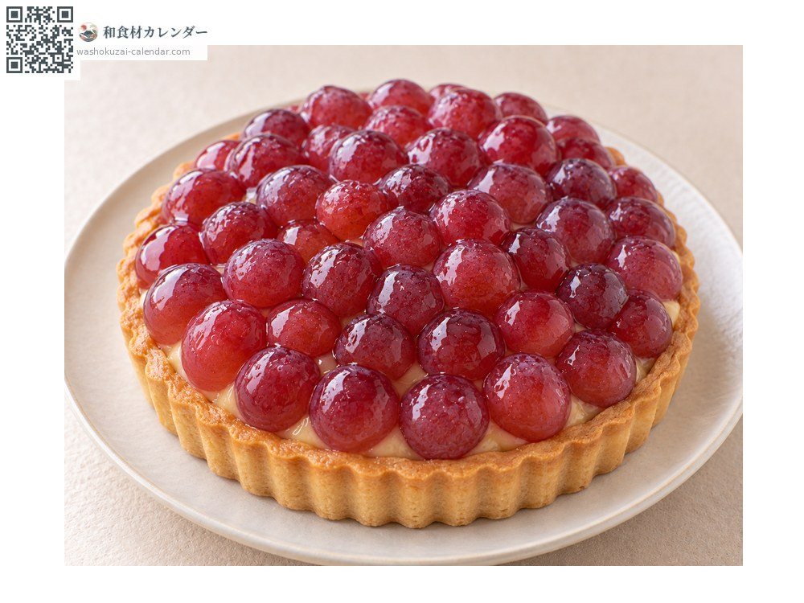

果物
デラウェア
でらうぇあ
別名・別表記葡萄、ぶどう、ブドウ、budo、budou
旬は6月・7月・8月

旬の時期
1月
2月
3月
4月
5月
6月
7月
8月
9月
10月
11月
12月
旬出回り
調理法

そのまま
軸を持って口に押し出す。種がなく皮も薄い。

冷凍
凍らせるとシャーベットのようになる。

タルト
小粒なので敷き詰めやすい。
選び方
粒が揃い、白い粉が均一にふいているもの。軸が緑で太いもの。
保存方法
洗わずに袋に入れて冷蔵。房のまま保存し、食べる分だけ切り取る。
主な産地
豆知識
アメリカ原産で明治期に日本へ渡った品種。ジベレリン処理により種なしにする技術が日本で確立され、以後の種なしブドウ栽培の基礎となった。小粒だが糖度が高く、早い時期から出回る。